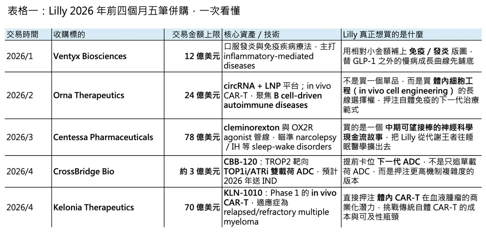
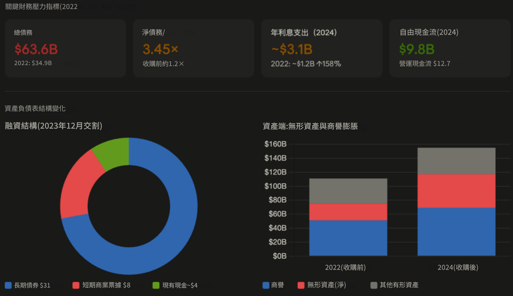
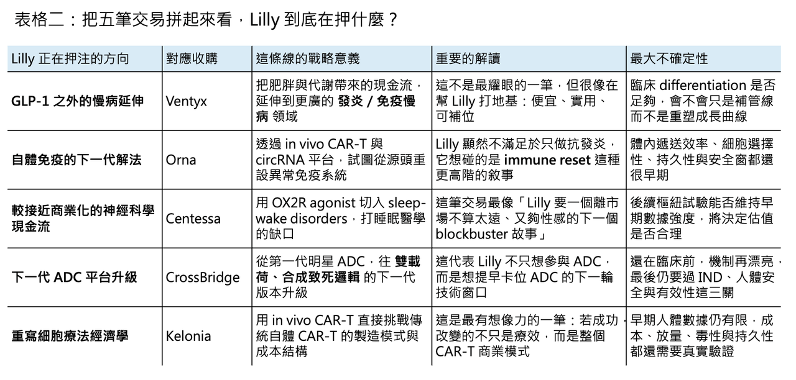

當現金多到必須花掉：Lilly 四個月五筆併購，買的不是資產，而是 GLP-1 之後的下一個十年
💡 四個月，五筆交易，若把交易上限全部加總，Eli Lilly 在 2026 年前四個月已經丟出超過 187 億美元的併購火力：1 月的 Ventyx Biosciences、2 月的 Orna Therapeutics、3 月的 Centessa Pharmaceuticals、4 月的 CrossBridge Bio，再加上 4 月底最新的 Kelonia Therapeutics。這種密度，放在大型藥廠裡已經不是「正常 BD 節奏」，而是明確的資本配置宣言。Lilly 顯然不是在做例行補貨，而是在主動把 tirzepatide 時代創造出的巨量現金，換成下一輪估值敘事的籌碼。
很多人第一直覺會把這波併購，直接解讀成「專利懸崖焦慮」。但若只用 patent cliff 去解釋 Lilly，反而會看錯方向。Lilly 2025 年全年營收為 651.79 億美元，年增 45%；其中 Mounjaro（tirzepatide）全年營收 229.65 億美元，Zepbound（tirzepatide）全年營收 135.42 億美元，兩者合計 365 億美元以上，已經構成一台極其罕見的現金機器。更關鍵的是，Lilly 的核心產品保護並不是明天就塌：Verzenio（abemaciclib）在美國的 compound patent 估計到 2031 年，Taltz（ixekizumab）到 2030 年；Jardiance（empagliflozin）雖然面臨價格與政策壓力，但與 Boehringer Ingelheim 的主要合作仍持續到 2028 年底。這不是一家公司被逼到牆角時的慌亂購物，而是一家手上現金太多、又知道資本市場不會永遠只給它「肥胖藥溢價」的公司，開始提前買下一個十年的想像力。
🔹 這也是 Lilly 與 Pfizer 最不一樣的地方。Pfizer 2023 年用 430 億美元收購 Seagen，背景是 COVID 紅利衰退與到 2030 年前約 170 億美元的專利到期壓力，甚至還為此舉債 310 億美元。那是一種典型的「先補營收缺口、再談成長敘事」的大型重建式收購。Lilly 則完全是另一個故事：它不是在替昨天補洞，而是在用今天的暴利，先為後天鋪路。換句話說，Pfizer 當年買 Seagen，更像是被現實推著走；Lilly 這一輪連續出手，則更像是在主動對市場說：我知道 GLP-1 不會是永遠唯一的答案，所以我現在就開始買下一個答案。
而且 Lilly 下手的方式也很有意思。它不是再做一筆 Seagen 等級的單點豪賭，而是把資本拆成多筆中型與小型押注：Ventyx 12 億美元、Orna 最高 24 億美元、Centessa 最高 78 億美元、CrossBridge 約 3 億美元、Kelonia 最高 70 億美元。這套打法的精神很像投資組合而不是單筆賭局：單一資產失手，不至於重創資產負債表；但只要其中兩三筆長成平台級資產，Lilly 就能順利把市場對它的敘事，從「肥胖藥之王」擴寫成「下一代平台藥廠」。
01｜先把話說白：Lilly 買的不是營收，而是估值延續權

📌 Lilly 眼前真正要回答的問題，不是「明年營收怎麼辦」，而是「當 Mounjaro 與 Zepbound 已經把基期拉到這麼高之後，市場還願不願意繼續給你這種估值」。資本市場對一哥從來都不是只看 present tense。你今天賺得再多，市場接下來仍會問：GLP-1 之後呢？口服減重藥上來之後呢？當整個肥胖市場進入口服化、價格競爭、甚至未來 generic pressure 的階段之後，你的第二條、第三條成長曲線在哪裡？Lilly 這波併購的真正功能，就是提前把這些問題的答案買回來。
2026 年 4 月 1 日，Lilly 的口服減重藥 Foundayo（orforglipron）獲 FDA 核准上市，正式把 obesity market 推進到口服競爭新階段。Reuters 當時就指出，這個市場已經不再只是 Lilly 對 Novo Nordisk 的雙雄遊戲，AstraZeneca/Eccogene、Roche/Carmot、Merck/Hansoh、Structure、Viking 等公司都在往口服肥胖藥衝刺，華爾街對未來十年 1,500 億美元市場的樂觀預期，也開始出現重新估值。換句話說，Lilly 現在看起來「錢多到燒手」的狀態，不見得會永遠維持。也正因如此，現在先用現金去買未來，是一種非常合理、甚至帶點防禦意味的主動進攻。
02｜兩筆 in vivo CAR-T：Lilly 押注的不是改良版 CAR-T，而是重寫細胞療法經濟學

🧬 Lilly 在同一季接連拿下 Orna 與 Kelonia，幾乎已經把自己的判斷寫在臉上：傳統自體 CAR-T 的瓶頸，很多時候不是某個單點工程問題，而是整個模式本身太重。現行 autologous CAR-T 需要先從病人身上採 T 細胞，再體外基因改造、擴增、品管、最後回輸，現在商業化產品平均 vein-to-vein time 仍常落在 3–6 週左右，而 CAR-T 本體的價格就已是數十萬美元等級，整體治療總成本更高。這些限制不是再優化一點流程、再多蓋一座廠就能完全解除的，它們本質上是模式稟賦。
所以 in vivo CAR-T 真正吸引大藥廠的地方，從來不是「聽起來比較新」，而是它理論上可以直接繞過最昂貴、最慢、最難擴張的體外製造環節：把基因載體送進人體，直接在病人體內把 T 細胞重編程。若這條路走通，CAR-T 就不只是變便宜一點、快一點，而是可能從高度集中於大型學術中心的複雜療法，轉向更可規模化、可擴張、可進一步下沉的治療模式。這就是為什麼市場常把 in vivo CAR-T 稱為 cell therapy 的 holy grail。

🔹 先看 Orna。Lilly 在 2 月宣布以最高 24 億美元收購 Orna Therapeutics，核心不是單一分子，而是 Orna 的 circular RNA（circRNA）加 lipid nanoparticle（LNP）平台。官方揭露得很清楚：Orna 的 lead program 是 ORN-252，一個 clinical trial-ready、標靶 CD19 的 in vivo CAR-T，目標是治療 B cell-driven autoimmune diseases。這個定義很重要。它意味著 Lilly 看中的，不只是體內 CAR-T 這個技術名詞，而是把體內細胞重編程拉進自體免疫領域的可能性——也就是用「在源頭重置異常免疫細胞」的方式，去對抗原本需要長期抑制、慢性維持的疾病。把這筆交易和 1 月收購 Ventyx 放在一起看，Lilly 在自免領域其實是在同時鋪兩條線：一條是 Ventyx 這種 oral inflammation / NLRP3 路徑的小分子慢病治理，另一條是 Orna 這種試圖直接重置免疫系統的高風險高報酬平台。前者處理發炎結果，後者瞄準免疫病根。
但 Orna 的風險也非常直白。circRNA + LNP 在體內把 CAR construct 精準送進 T 細胞，這件事聽起來很美，但只要送達效率、持久性、細胞選擇性、安全窗口任何一個環節不如預期，平台價值就會迅速折價。尤其自體免疫病人的風險容忍度，通常不會像末線血液腫瘤那麼高，這意味著 in vivo CAR-T 在 autoimmune 的監管門檻，其實可能比腫瘤還更難拿捏。Lilly 用 24 億美元買下 Orna，買的不是已被驗證的臨床確定性，而是「如果這件事成了，它可能把整個自免治療路徑改寫」的選擇權。
🔹 再看 Kelonia。這是另一種完全不同的 in vivo CAR-T 押注。Lilly 在 4 月宣布以 32.5 億美元 upfront、總值最高 70 億美元收購 Kelonia Therapeutics，標的是 KLN-1010，一款已進入 Phase 1、瞄準 relapsed/refractory multiple myeloma 的 anti-BCMA lentiviral in vivo CAR-T。官方甚至直接寫明，KLN-1010 的早期臨床資料已在 2025 ASH plenary session 被重點呈現。也就是說，Kelonia 不是停留在 PowerPoint 上的純概念平台，而是已經進到「開始有人體驗證」的下一層。這也是為什麼這筆交易比 Orna 更貴：Lilly 付的不只是平台費，而是臨床去風險化之後的溢價。
這兩筆交易若放在一起看，Lilly 其實已經把 in vivo CAR-T 最重要的兩個方向一次買齊了：Orna 偏向自體免疫、Kelonia 偏向血液腫瘤；Orna 用 circRNA/LNP，Kelonia 走 lentiviral in vivo delivery；前者更像廣義 genetic medicine 與 immune reset，後者更像直接衝擊現有 autologous BCMA CAR-T 的商業模式。對 Lilly 而言，這不是在做一筆單純的 oncology 併購，而是在提早布局「如果下一代細胞療法真的不再需要 ex vivo manufacturing，誰會成為新標準」的問題。成了，這是下一代平台；不成，這就是最昂貴的學費。
03｜78 億美元買睡眠：Lilly 在 Centessa 身上，買的是一個被低估太久的神經科學市場

🌙 若說 Orna 與 Kelonia 買的是遠期技術平台，那 Centessa 這筆最高 78 億美元的收購，買的就是比較接近中期現金流的高品質神經科學資產。發作性嗜睡症（narcolepsy type 1 / type 2）與 idiopathic hypersomnia 長期都是被低滲透、但臨床痛點非常真實的市場。這些病人不是單純「很愛睡」，而是覺醒系統本身出問題，尤其 NT1 的核心生物學已經很明確：orexin 訊號缺失，讓維持清醒的能力斷了線。現有藥物不是沒有市場，而是都有代價。以 oxybate 類為核心的治療，長期受給藥方式、REMS 管控與依從性限制；Wakix（pitolisant）是間接機轉；modafinil / armodafinil 這類促醒藥又更像繞過問題，而不是補回被缺失的 orexin biology。這也是為什麼 orexin receptor 2（OX2R）agonist 這條路，近年被整個睡眠藥理界視為真正有機會改寫標準治療的方向。
Centessa 的 cleminorexton（前代號 ORX750）之所以值錢，不是因為它是第一個講 OX2R 的公司，而是因為它在 Phase 2a 已經把幾個最關鍵的問題回答得不差。公司在 2025 年 11 月公布的資料顯示，ORX750 在 NT1、NT2 與 IH 的初始 cohort 中，都在 Maintenance of Wakefulness Test（MWT）與 Epworth Sleepiness Scale（ESS）打出統計上顯著且具臨床意義的改善；在 NT1，還看到 Weekly Cataplexy Rate（WCR）的明顯下降。更重要的是，至少在初始 cohort 裡，它的安全性輪廓相對乾淨：大多 TEAE 為輕到中度、短暫，且沒有臨床上有意義的 cardiac、visual、liver 或 renal change。對一個想走長期日間給藥的清醒藥來說，這些訊號的價值遠高於 headline 本身。因為睡眠醫學不是腫瘤學，病人不是願意用高毒性去換短期 survival benefit；這是一個高度依賴長期耐受性與依從性的市場。
🔹 Lilly 這時候出手，節點也抓得很準。它不是在最早的 healthy volunteer 階段買，也不是等 registrational data 出來後再去搶，而是選在「機轉已被產業接受、Phase 2a 已把 best-in-class 輪廓打出來、但估值還沒完全漲到核准價」的中間點。這是一種非常典型、也非常聰明的 Pharma timing bet。更何況，這條賽道並不是只有 Centessa 一家在跑。Takeda 的 oveporexton（TAK-861）在 2025 年已公布兩項 Phase 3 narcolepsy type 1 研究的正向結果；Alkermes 的 alixorexton（ALKS 2680）也在 2025 年交出中期訊號，雖然市場對細節仍有保留。換句話說，Lilly 不是在造一個不存在的市場，而是在一個已被逐步去風險化、且可能迎來新一代標準治療重寫的賽道上，直接買下一張前排門票。
04｜CrossBridge 不大，但很關鍵：Lilly 想買的是 ADC 的下一個版本
🎯 若把金額拉開看，CrossBridge Bio 這筆約 3 億美元的交易，當然遠小於 Centessa 或 Kelonia；但從技術指向來看，它反而很值得注意。CrossBridge 的 lead asset CBB-120 是一款 TROP2-targeting、同時攜帶 Topoisomerase I inhibitor（TOP1i）與 ATR inhibitor（ATRi）的 dual-payload ADC，預計 2026 年送 IND。這個設計的意思很直接：不是再做一個「換個 linker、換個 payload」的微調版 ADC，而是想把單一 payload 的邏輯，推向更高一層的機制協同。
為什麼這條路值得被大藥廠買？因為第一代明星 ADC 已經把市場教育完成，也把限制暴露得差不多了。Enhertu（trastuzumab deruxtecan）、Trodelvy（sacituzumab govitecan）之所以成功，是因為它們證明 ADC 可以從「概念好聽」變成真正 blockbuster；但也正因為第一代成功，整個產業更清楚看到單 payload 架構的天花板：response durability、payload resistance、靶點密度與治療指數之間的平衡，愈來愈成為下一輪競爭的焦點。CrossBridge 這類 dual-payload ADC 的邏輯，就是試圖把單一壓力改成雙重壓力：TOP1i 先把 DNA 損傷打開，ATRi 再把修復路徑封住，讓腫瘤細胞在同一個空間、同一個時點，承受更高的合成致死壓力。這套邏輯是否真的會轉成藥，還得等臨床驗證；但從機制自洽性來說，它確實是值得提前卡位的下一代方向。
🔹 而且 Lilly 買 CrossBridge，也不是孤立事件。2026 年 1 月，Lilly 自己的 sofetabart mipitecan 已拿到 FDA breakthrough therapy designation；更早在 2025 年 9 月，Lilly 又宣布在維吉尼亞州投資 50 億美元興建 integrated bioconjugate manufacturing site，明確把 ADC 與相關先進療法製造列為美國本土產能重點。這代表 Lilly 對 ADC 不是「看起來不錯，先買一個玩玩」，而是從自研資產、製造基礎到外部技術路徑，全部一起押。CrossBridge 在這個脈絡下，就不是一筆小 deal，而是 Lilly 在已經有臨床與製造基礎之後，往下一代 dual-payload 變數伸手。
更有意思的是，這不是 Lilly 一家在這樣想。2026 年 4 月，Gilead 也宣布以最高 50 億美元收購德國 ADC 公司 Tubulis。兩筆交易的方向不完全一樣：Lilly 買的是 dual-payload 的機制升級，Gilead 買的是 ADC platform 與下一代連接子／設計能力；但兩者共同指向同一個產業共識：大型藥廠內部多半已經接受，第一代 ADC 的 winning formula 並不會是最後答案，第二代與第三代技術窗口正在打開。這也是為什麼 Lilly 寧可在 CrossBridge 還沒進 clinic 前就先買，因為真正貴的，常常不是已經被市場看懂的資產，而是還沒被全面定價的下一代平台可能性。
05｜把五筆交易拼起來看，Lilly 的併購地圖其實非常連貫
🗺️ 如果把這五筆收購當成彼此無關的個案，就很容易低估 Lilly 的企圖心。Ventyx 是炎症與慢病的橫向延伸，Orna 是自體免疫與 genetic medicine 的長線平台押注，Centessa 是中期可望接棒的神經科學現金流，Kelonia 是以人體早期資料去卡位 in vivo CAR-T 的遠期天花板，CrossBridge 則是為 ADC 的下一代版本預留座位。這張地圖真正厲害的地方在於：它不是散彈打鳥，而是把代謝現金流轉成多個時間維度的成長選項——近中期靠神經科學與炎症，中遠期靠 in vivo cell engineering 與 next-gen oncology platform。
但有一個問題，今天其實還不能太早給答案。Lilly 現在的確處在一個非常奢侈的時間點：Mounjaro、Zepbound 和剛獲批的 Foundayo，讓它有能力在別人還在想要不要出手時，先把牌桌上的好資產掃一輪。可這種「現金多到必須花掉」的狀態，並不保證會永久存在。Reuters 已經點出，肥胖藥市場正快速走向口服化、價格競爭與多玩家擁擠；當市場從供不應求，逐步走向產品愈來愈多、價格愈來愈透明的階段，今天的 tirzepatide 巨額現金流，未來 3 到 5 年很可能不會再像現在這樣寬鬆。等到那個時候，Lilly 在 2026 年布下的這些局，就不能再只是「很會買」，而必須開始有人兌現。
📍 所以，這波併購潮最值得記住的一句話，不是「Lilly 很有錢」，而是「Lilly 知道光有錢還不夠」。真正的問題從來不是把 cash 花掉，而是能不能把 cash 轉成下一輪能被市場重新定價的 growth narrative。從這個角度看，Lilly 2026 年買的確實不是單一資產，而是 GLP-1 之後，自己還能繼續被當成王者 pharma 的權利。至於這張權利，未來值不值 187 億美元，就要看今天買下的這些故事，哪幾個能在三年後長成真正的藥。
參考資料：
[0]: 各公司官網＆公開資料
[1]:
reuters.com
https://www.reuters.com/legal/transactional/eli-lilly-buy-ventyx-biosciences-12-billion-deal-2026-01-07/
www.reuters.com
[2]:
"Lilly reports fourth-quarter 2025 financial results and provides 2026 guidance | Eli Lilly and Company"
[3]:
reuters.com
https://www.reuters.com/markets/deals/pfizer-buy-seagen-deal-valued-43-billion-2023-03-13/
www.reuters.com
[4]:
reuters.com
https://www.reuters.com/business/healthcare-pharmaceuticals/lillys-weight-loss-pill-wins-us-approval-2026-04-01/
www.reuters.com
[5]:
www.sciencedirect.com
https://www.sciencedirect.com/science/article/abs/pii/S2352302624002734
www.sciencedirect.com
[6]:
reuters.com
https://www.reuters.com/legal/litigation/eli-lilly-advanced-talks-acquire-kelonia-therapeutics-over-2-billion-wsj-says-2026-04-19/
www.reuters.com
引用本文
若在簡報、報告或社群討論引用，建議附上 Drugnews 原文連結。
Drugnews 編輯部，〈一篇文章講通現在的“禮來”併購邏輯〉，Drugnews｜藥時事，2026/04/29，https://drugnews.com.tw/articles/2026-04-29-dcard-261388300.html